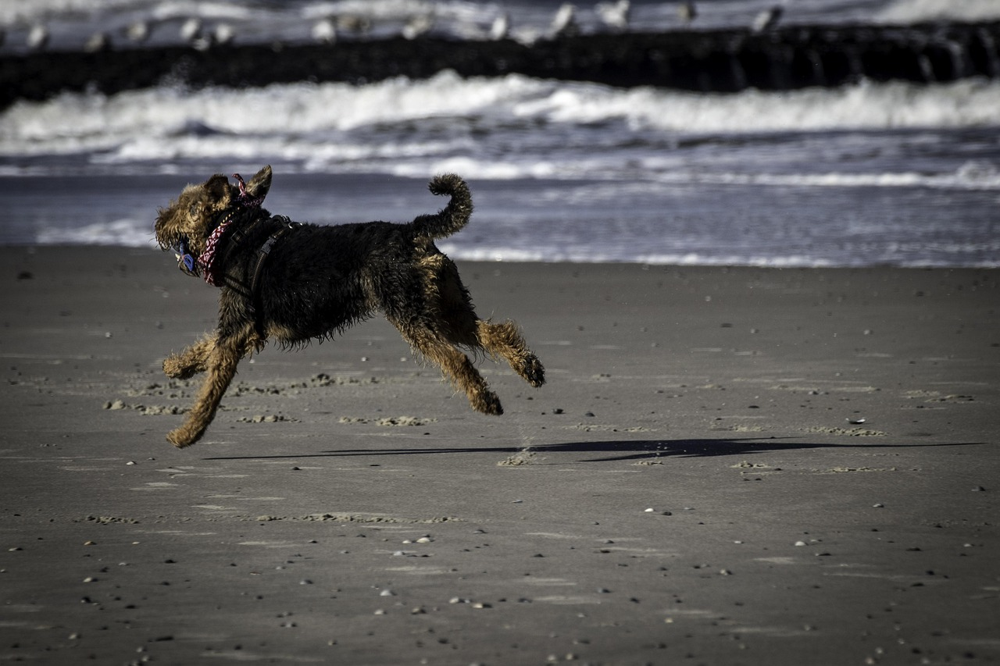
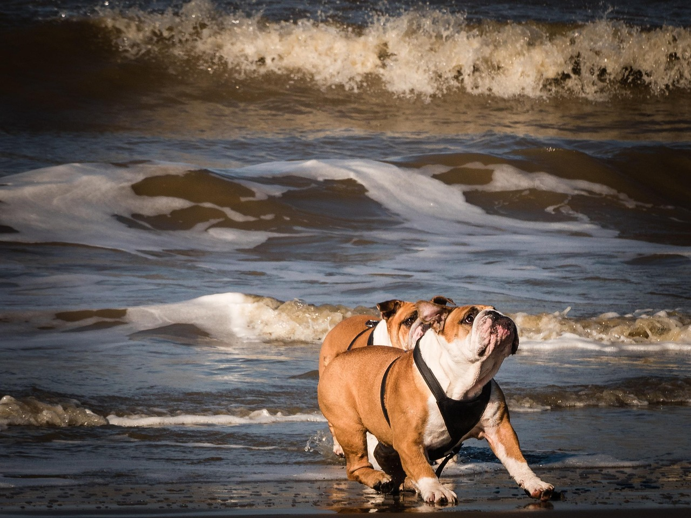

Off-Leash vs On-Leash Dog Beaches: What to Expect
Florida’s coastline offers both leash-required and off-leash dog beaches, but each comes with its own rules, experiences, and responsibilities. Knowing what to expect at each type will help you and your pup enjoy a fun and safe beach day — no matter how much freedom is on the line.
Understanding the Difference
At its simplest, an on-leash dog beach requires your dog to remain leashed at all times, while off-leash beaches allow dogs to roam freely in designated areas. The key difference is responsibility — off-leash freedom depends entirely on your dog’s behavior and your ability to control them verbally.
Both types of beaches can be great experiences if you follow the local rules and prepare your dog properly.
Off-Leash Dog Beaches
Off-leash dog beaches are paradise for social, well-trained dogs. These areas let dogs run, swim, and play freely without a leash — but only under the supervision of attentive owners.
✅ What to Expect
- Large, fenced, or clearly marked areas for dogs to roam safely.
- Friendly, playful pups — but also occasional overexcitement.
- Owners supervising closely and intervening when needed.
⚠️ Important Rules and Tips
- Your dog must respond to **voice commands** and have solid recall.
- Bring **waste bags** and clean up immediately after your dog.
- Keep your dog **up-to-date on vaccinations** and flea/tick prevention.
- Remove leashes only in **designated off-leash zones**.

On-Leash Dog Beaches
On-leash beaches are ideal for dogs still learning social skills or for owners who prefer a more controlled environment. Many Florida beaches allow leashed dogs outside the busiest swimming areas, especially early morning or evening.
✅ What to Expect
- Dogs must remain **on a leash (usually 6 feet or shorter)**.
- More predictable behavior and easier control in crowds.
- Plenty of walking paths, shaded areas, and water fountains.
⚠️ Safety and Etiquette Tips
- Use a **comfortable harness** instead of a neck collar.
- Keep distance from reactive or anxious dogs.
- Respect beach-goers who may not be comfortable with dogs.
- Bring **fresh water** to keep your pup hydrated — saltwater isn’t safe to drink.
Training Before Visiting an Off-Leash Beach
Before giving your dog full freedom, make sure they’re ready for it. Reliable recall, social comfort, and basic obedience are must-haves. Practice in smaller enclosed parks first before upgrading to the open beach.
- Teach commands like come, stay, leave it, and drop it.
- Reward calm greetings and discourage rough play.
- Gradually introduce your dog to busier environments.
Remember: even the best-trained dogs can get distracted by waves, birds, or new smells — stay alert and ready to step in if needed.

Finding the Right Beach for You
Florida offers both styles of beaches, often within a short drive of each other. If it’s your first visit, start with a quieter on-leash beach and see how your dog reacts. As they build confidence and recall skills, try a supervised off-leash visit next time.
Always check local regulations online or at the beach entrance — rules can change seasonally due to wildlife nesting or maintenance.
Final Thoughts
Whether your dog runs free or stays close by your side, the goal is the same — a fun, safe, and positive beach experience. Respect the rules, watch your pup closely, and enjoy the sunshine together. The right leash setup isn’t about restriction — it’s about responsibility and keeping everyone happy on Florida’s beautiful shores.
